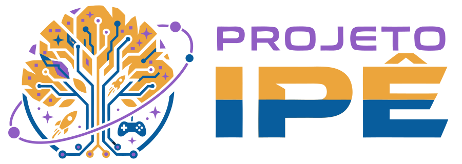

Marca vetorial original · R14
Símbolo e lettering fornecidos pelo responsável. Cores e curvas preservadas, sem fundo incorporado, bitmap ou fonte externa. A composição horizontal usa proporção 2,8125:1.
Fundo claro
128 px64 px32 px16 px
Fundo escuro

128 px64 px32 px16 px
Nos tamanhos menores, detalhes internos perdem definição; o arquivo mantém a identidade original.
Lettering original · Símbolo original · Procedência e hashes